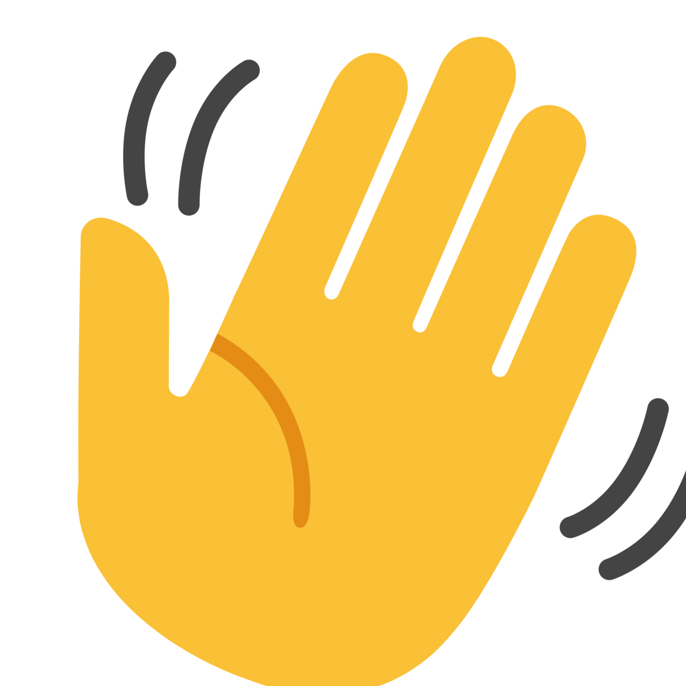

Hi  I'm a front end developer.
Well... I'm trying to be.
I am currently studying to become one, and with my eagerness for learning new things and always improving, I feel like me and front end developing will be a great combo.
I spend my time analysing and interpreting, and since constantly searching for self-development and knowledge I expect a lot from people as I expect a lot from myself.
I don't have enough skills in any area of front end developing to even consider what I am most passionate about yet, and I think I have much more to learn before I can decide. For now, everything is equally intresting and challenging.
Join me on my journey!